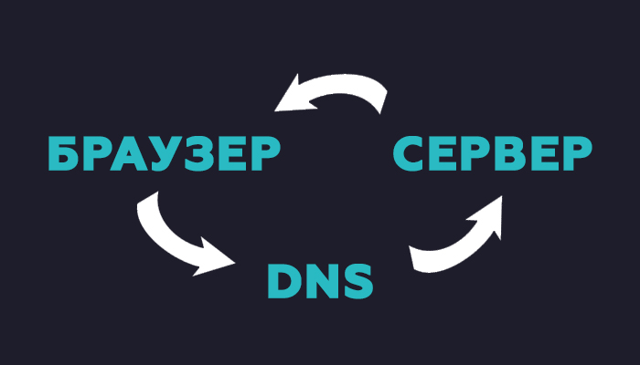

Введение
Мы будем изучать вёрстку. Вёрстка, она же HTML вёрстка - это один из этапов разработки веб-сайтов.
Если говорить конкретней, это создание структуры веб-страницы или определённой её части на основе макетов.
Любой сайт это HTML вёрстка.
Как мы заходим на сайты?
Вводя адрес сайта и нажав на клавишу enter, браузер отправляет введённый адресс на систему доменных имен (DNS), затем она нашла на своих серверах реальный адрес нашего сайта.
Далее запрос полетел на сервер, на которм физически находится наш сайт.
Сервер обработал запрос и вернул браузеру ответ в виде определённой информации.
ЗАтем браузер обработал этот понятный ему код и выдал результат, который мы видем. Понятный барузеру код и есть HTML вёрстка.
Технологии
Как правило вёрстка сайта выполняет с помощью 3 основных технологий:
- HTML (HyperText Markup Language) - язык гипертекстовой разметки. Его задачей стоит создать структуру (каркас) нашей страницы.
- CSS (Cascading Style Sheet) - каскадные таблицы стилей. Описывают то, как будет выглядеть и взаимодействовать вёрстка.
- JS (JavaScript) - язык объектно ориентированного программирования (ООП), добавляет интерактивности к вёрстке (взаимодействие с пользователем), используется для вычеслений и обмена данными.
Если объяснять на примере человека, то HTML это скелет. CSS - наш внешний вид (кожа, мышцы). JS - наша нервная система и отчасти мозг, определяет тип нашего поведения с другими людьми.
Требования к вёрстке
Современная вёрстка должна быть: адаптивной, кроссбраузерной, быстрой.
Разберём по пунктам:
- Адаптивной. Адаптивная вёрстка подстраивается под любой размер экрана, монитора или же мобильного устройства. При этом она не должна ломаться. В процессе наша вёрстка может менять для удобства пользователя.
- Кроссбраузерной. Кроссбраузерная вёрстка, максимально должна отображаться и работать во всех популярных браузерах последних версий.
- Быстрой. Быстрая вёрстка, позволяет странице быстро открываться в браузере.
Преимущества Front-End
Разберём плюсы и минусы изучения вёрстки в наше время.
Плюсы:
- Может освоить как гуманитарий, так и точник.
- Возможность работать удалённо.
- Обширная специализация, включающая знания из смежных областей.
Минусы:
- Высокая конкуренция.